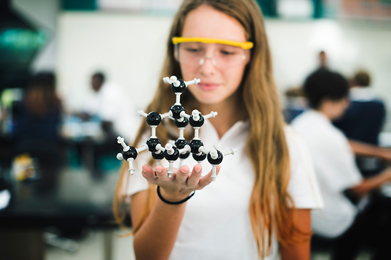

Notícias
Inscreva os alunos em prêmio da Samsung que busca solucionar problemas locais e transformar o futuro
‘Respostas para o Amanhã’ recebe inscrições até 17 de junho. Prêmio é voltado a alunos do ensino médio da rede pública com professores das áreas de Ciências da Natureza e da Matemática e suas Tecnologias.
As inscrições para a 6ª edição do prêmio Respostas para o Amanhã já estão abertas e se encerram em 17 de junho. O prêmio é uma iniciativa da Samsung global e tem como proposta mobilizar professores e alunos do ensino médio da rede pública a desenvolveram projetos de investigação e experimentação científica e/ou tecnológica.
Os projetos devem ser inscritos por professores que lecionem nas áreas de Ciências da Natureza e da Matemática e suas Tecnologias e cada um pode ter de 5 a 15 estudantes. A proposta é a criação de soluções inovadoras locais para melhorar a qualidade de vida das pessoas da região dos alunos.
Na primeira etapa, 20 projetos serão selecionados, caindo para 10 na segunda etapa e para três na final que será em São Paulo com as despesas pagas.
Ano passado foram mais de 1200 projetos inscritos e o tema dos três finalistas, um de Pernambuco, outro do Ceará e outro do Rio Grande do Sul, estavam ligados ao meio ambiente: “’Estudo sobre o efeito larvicida do líquido da castanha de caju em mosquitos hematófagos’’, ‘’Reflexologia Experimental de Cencrus echinatus e Jatropha gassypiifolia no desenvolvimento de culturas-alvo da agricultura familiar’’ e ‘’Estudo sobre o BCA: biossorvente da casca de arroz para remoção de metais da água de poço do litoral norte gaúcho.’’
Smartphone Samsung, notebook e TV da marca fazem parte da premiação.
“Dado interessante é que na última edição, os três projetos vencedores tiveram uma interação muito grande com a universidade. Os alunos tiveram a oportunidade de usar o laboratório, pisar em uma instituição de ensino” revela a gerente de cidadania corporativa da Samsung Brasil, Isabel Costa.
O prêmio Respostas para o Amanhã tem coordenação geral do CEPENC (Centro de Estudos e Pesquisas em Educação, Cultura e Ação Comunitária).
Leia nossa entrevista com a gerente de cidadania corporativa da Samsung Brasil, Isabel Costa:
Educação: Qual a proposta do prêmio? O foco em Ciências da Natureza e da Matemática e suas Tecnologias é por conta da defasagem brasileira nessas áreas?
Isabel: O prêmio é uma iniciativa global da Samsung e está presente em mais de 15 países com o mesmo foco: desenvolver e estimular iniciativas na educação que usam as Ciências da Natureza e da Matemática e suas Tecnologias como impulsionadoras de projetos inovadores nas escolas pensando em soluções locais.
É uma forma de incentivar o professor a trabalhar dentro de uma metodologia científica, mas trabalhar o conceito e a abordagem usando esses aspectos das Ciências e suas Tecnologias de uma forma que eles conduzam junto aos alunos possibilidades de pensar ciência de forma mais ampla, pensando um pouco em solucionar problemas locais. A gente sabe que há desafios em nosso país nessa área e, de alguma maneira, o prêmio acaba sendo também um incentivador, estimulador de ideias e soluções.
Educação: Então o prêmio incentiva a criação de solução de um problema local e ainda incentiva tanto o professor quanto o aluno a criarem novas abordagens de aprendizagem na sala de aula.
Isabel: Isso. É mais uma ferramenta que o professor ganha para trabalhar disciplina e com temas que estão no dia a dia dos alunos. Muitos projetos que vêm sendo desenvolvidos agregam muito valor na comunidade que vivem esses jovens e, isso, de alguma forma contribui para o aprendizado e também para o protagonismo dos jovens, porque a escola acaba sendo um espaço comunitário e muito mais amplo que apenas a disciplina escolar curricular.
Dado interessante é que na última edição, os três projetos vencedores tiveram uma interação muito grande com a universidade. Os alunos tiveram a oportunidade de usar o laboratório, pisar em uma instituição de ensino.
